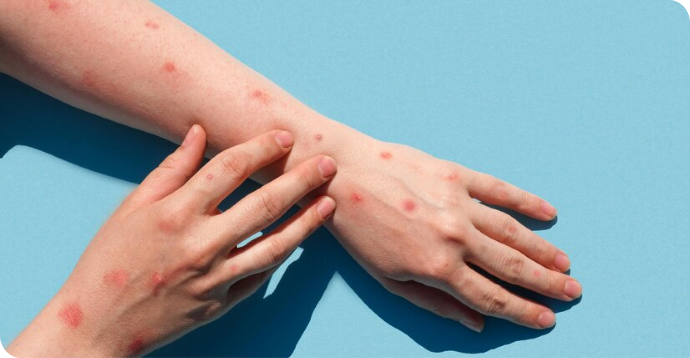
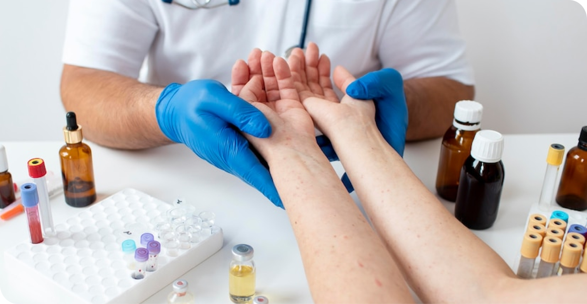

Як Подолати Симптоми Вітрянки у Дорослих Швидко та Ефективно
Вітрянка у дорослих: ознаки та ефективне лікування
Багато хто пам’ятає вітряну віспу з дитячих років, але є і ті люди, які не переносили це захворювання, коли були маленькими. Якщо ви один з них, то ви у групі ризику і саме тому маєте дізнатися якомога більше інформації з цього приводу. У цій статті ми зібрали усе необхідне для швидкого встановлення діагнозу та лікування. Читайте далі, щоб дізнатися, як починається вітрянка у дорослих та які основні симптоми цього захворювання. Батькам треба пильно стежити за своїм станом здоров’я, якщо в них відсутній імунітет до цієї хвороби, адже ймовірність заразитися становить 95-100%, особливо якщо в родині є дитина. Відповідно до статистики, 90% дітей молодше 12 років вразливі до даної інфекції і близько 150 000 маленьких українців щорічно хворіють на неї. Згідно з науковими дослідженнями, перебіг захворювання для середньостатистичної повнолітньої людини доволі важкий. Окрім субфебрильної або високої температури, інтоксикації та інших ознак вітряної віспи, існує ризик отримати серйозне ускладнення, що потребує пролонгованої реабілітації. Лікування вітрянки у дорослих займає набагато більше часу ніж у дітей та у 17% випадків пов’язане з виникненням бронхіту, пневмонії, піодермії, енцефаліту, отиту, мієліту, лімфаденопатії та блефарокон’юнктивіту. Більш ніж 91% хворих скаржаться на сильний свербіж. В той час, як 41% також страждає від інтенсивного болю в горлі.
Шляхи передачі та симптоми вітрянки у дорослих
Перш за все перевірте, чи немає у вас чи ваших близьких ознак, що вказують на захворювання. Серед найбільш поширених виділяють наступні:
- лихоманка
- висипання на шкірі
- озноб
- біль у м’язах
- головний біль
- першіння в горлі
- втрата апетиту
Вітрянка у дорослих характеризується довгим продормальним періодом, що становить від 3 до 5 днів. Протягом цього часу людина відчуває ознаки інтоксикації, але решта симптомів з’являється пізніше, отже, існує велика загроза зараження. Розуміння, чому і як починається вітрянка у дорослих, може допомогти уникнути контакту зі збудником. Перше, що ви маєте запам’ятати стосовно цієї хвороби – це те, що вона передається повітряно-крапельним шляхом. Вірус вітряної віспи доволі стійкий, тому він розповсюджується за межі кімнати, у якій знаходиться хвора людина. Найбільша кількість захворювань припадає на осінній та зимовий періоди. Вагітним жінкам та хворим на ВІЛ необхідно уникати вітрянки особливо ретельно. Вірус може спричинити вади розвитку плоду або значно погіршити стан здоров’я людей зі слабким імунітетом.
Як виглядає вітрянка у дорослих людей?
Висипання, що виникають через потрапляння вірусу вітряної віспи в організм, мають характерні ознаки. Спочатку на тілі з’являються плями, що перетворюються на пухирці. Деякі з них доходять до стадії везикул, що мають овальну чи круглу форму та містять рідину. Після їх підсихання утворюються скоринки коричневого кольору, що поступово зникають у разі результативного лікування. Висипання зазвичай вражають верхні й нижні кінцівки, тулуб, обличчя та навіть волосисту частину голови. В залежності від інтенсивності захворювання, можуть також постраждати підошви стоп, долоні та слизові оболонки.
Ефективне лікування вітрянки у дорослих
Медицина не стоїть на місці, отже, варто застосовувати препарати нового покоління, щоб подолати захворювання максимально ефективно. ПоксКлін — це революційний охолоджуючий мус, який швидко полегшує симптоми вітряної віспи. Він підходить як дітям, так і дорослим, миттєво усуваючи свербіж та прискорюючи лікування.
На відміну від інших препаратів, ПоксКлін не залишає кольорових слідів на шкірі, результативно перешкоджаючи бактеріям шлях до рани завдяки натуральним складовим. Він не лише дезінфікує уражені ділянки, але й запобігає утворенню рубців. ПоксКлін має надзвичайний анестетичний ефект, завдяки якому розчісування рани зводиться нанівець. Більш того, зручна упаковка спрощує доступ до важкодоступних місць, забезпечуючи негайне полегшення. Якщо ви виявили ознаки вітряної віспи в себе або іншого члена сім’ї, проконсультуйтесь з лікарем щодо застосування препарату ПоксКлін для ефективного усунення симптомів та швидкого одужання.
Замовити онлайн в аптеках Вашого міста


Зворотний зв'язок
Поділитися вашими враженнями від застосунку продукту - надішліть повідомлення щодо якості чи небажання явищ компанії - імпортеру.
Написати